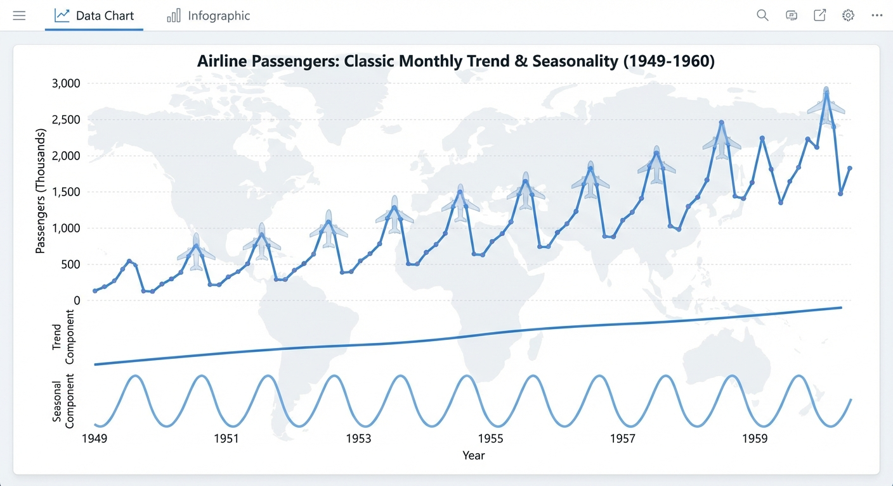

Topic 9
Airline Passenger Time Series
Easy

Topic 9 – Airline Passenger Time Series (Statsmodels built-in)
Level: Easy Goal: Classic monthly airline passenger series (trend + seasonality) using a library dataset.Dataset & Library
- Dataset: AirPassengers dataset via
statsmodels.datasets.get_rdataset - Library: statsmodels
Installation
pip install statsmodelsData Loading
import pandas as pd
from statsmodels.datasets import get_rdataset
data = get_rdataset("AirPassengers", "datasets").data
Original data typically has a 'time' or 'Month' column and 'value' column
print(data.head())
If there is only an index and a passenger column:
Example conversion (adapt depending on structure)
data["Month"] = pd.date_range(start="1949-01-01", periods=len(data), freq="M")
data = data.set_index("Month").sort_index()
data.rename(columns={data.columns[0]: "Passengers"}, inplace=True)
print(data.head())Implementation Steps
1. Data Loading and Exploration
- Load AirPassengers dataset using statsmodels
- Inspect data structure and format
- Convert to proper time series format (datetime index)
- Examine basic statistics and data range
2. Exploratory Data Analysis (EDA)
- Plot the time series (should show clear trend and seasonality)
- Identify trend (increasing over time)
- Identify seasonality (yearly pattern, peak in summer)
- Perform time series decomposition (additive or multiplicative)
- Calculate and visualize ACF/PACF plots
3. Stationarity Analysis
- Test for stationarity (ADF test) - will be non-stationary
- Apply first differencing
- Apply seasonal differencing if needed
- Test transformed series for stationarity
4. Model Building
- ARIMA Models:
- Use ACF/PACF to identify (p, d, q)
- Try multiple ARIMA configurations
- SARIMA Models (recommended):
- Identify seasonal pattern (12 months)
- Fit SARIMA models: SARIMA(p, d, q)(P, D, Q)12
- Try different seasonal configurations
- Exponential Smoothing:
- Holt-Winters method (additive or multiplicative)
- Compare with ARIMA/SARIMA
5. Model Selection
- Compare models using AIC/BIC
- Use cross-validation or hold-out validation
- Select best model based on validation performance
- Check residual diagnostics
6. Model Evaluation
- Split data (e.g., last 2 years as test set)
- Generate forecasts
- Calculate accuracy metrics (MAE, RMSE, MAPE)
- Visualize forecasts with actual values
- Analyze forecast errors
7. Forecasting
- Generate future forecasts (e.g., next 12-24 months)
- Include prediction intervals
- Visualize with historical data
- Interpret results
Expected Deliverables
- EDA Report:
- Time series plot showing trend and seasonality
- Decomposition plots (trend, seasonal, residual)
- ACF/PACF plots
- Stationarity test results
- Model Results:
- Best model with parameters (e.g., SARIMA(1,1,1)(1,1,1)12)
- Model diagnostics (residual plots, ACF of residuals)
- Forecast accuracy metrics
- Forecast plots with confidence intervals
- Code:
- Complete Python notebook
- Functions for model fitting and evaluation
- Visualization utilities
Tips
- This is a classic dataset perfect for learning ARIMA/SARIMA
- Strong seasonality (yearly pattern) - SARIMA is highly recommended
- Multiplicative seasonality is common (variance increases with level)
- Use seasonal differencing for SARIMA models
- Compare additive vs multiplicative models
- This dataset is well-studied - results should align with literature
- Good for demonstrating Box-Jenkins methodology
- Perfect for understanding trend + seasonality decomposition
Starter Notebook
The starter notebook contains installation instructions and data loading code to help you get started with this topic.
Note: You can view the notebook directly on GitHub or download it to run locally in Jupyter.
Getting Started
This topic includes:
- README.md - Detailed implementation guide (this page)
- starter.ipynb - Jupyter notebook with installation and data loading code
- Featured image - Visual representation of the topic
Navigate to the Topic/9.Airline_Passengers/ directory to access all resources.